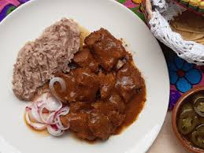

9.Colima

- Platillo: Tatemado de cerdo
- Ingredientes: Carne de cerdo, chiles secos, ajo, cebolla, vinagre, laurel.
- Historia: Platillo colonial que combina técnicas indígenas (tatemar) con ingredientes españoles.
- Dato curioso: El tatemado es tan representativo que se sirve en bodas, fiestas patronales y ferias locales.